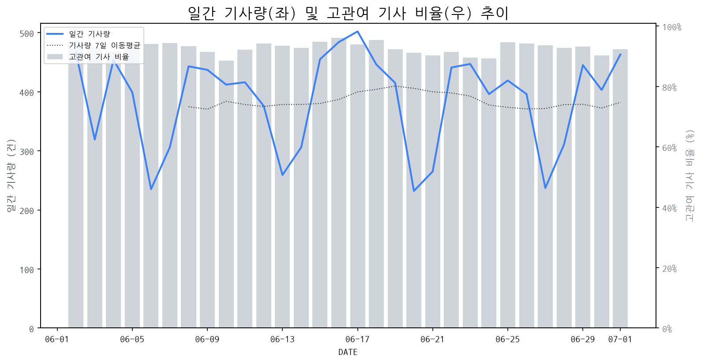

1
시장 활동 지표
기사량 추세 & 이상 징후 탐지
시장의 '전체 기사량'이 평소보다 비정상적으로 급증했는지(Spike)를 차트로 확인하고, LLM이 분석한 급등의 핵심 원인을 파악할 수 있음

고관여 기사란? 산업 연관 키워드로 수집된 기사들 중 디스플레이 키워드에 가중치를 반영하여 도출된 관련성 높은 기사
수집된 기사 수 (2026-07-01)
463
+17% WoW
기사량 변동 수준 (7일 이동평균 대비)
±6.7% 이하
2
오늘의 키워드
급격한 관심 ↑, 주목해야 할 키워드
1
폴더블
+4.3σ
애플의 폴더블 시장 참전 가능성과 삼성의 신제품 예고가 폴더블 기기 확산 기대감을 고조시켰습니다.
Related Metrics
금일 언급량: 16, 전일 대비: +13
Interpretation
폴더블 시장 성장 가속화
Next Step
'폴더블' 관련 상세 기사 및 경쟁사 반응 모니터링
2
4k
+2.2σ
파나소닉의 신형 4K LCD 프로젝터 공개 및 LG 스탠바이미 2 신제품 출시 영향
Related Metrics
금일 언급량: 6, 전일 대비: +6
Interpretation
4K 기술 경쟁 심화
Next Step
'4k' 관련 상세 기사 및 경쟁사 반응 모니터링
3
파나소닉
+2.0σ
파나소닉이 업계 최초 리얼 4K LCD 프로젝터 PT-VMQ85를 공개하며 신제품 세미나를 개최했습니다.
Related Metrics
금일 언급량: 5, 전일 대비: +5
Interpretation
신기술 발표, 시장 주목
Next Step
핵심 토픽 'MicroLED_Topic' 관련 신호입니다. 3번 섹션(키워드 감성분석)에서 해당 토픽의 감성 변동을 교차 확인하세요.
4
lcd
+1.6σ
파나소닉의 신형 4K LCD 프로젝터 공개 소식이 LCD 기술에 대한 관심을 재점화시켰습니다.
Related Metrics
금일 언급량: 4, 전일 대비: +4
Interpretation
LCD 기술 경쟁력 강화
Next Step
'lcd' 관련 상세 기사 및 경쟁사 반응 모니터링
3
실시간 Risk 키워드
경계해야 할 시그널 탐지
특정 토픽의 부정 감성 점수가 급등할 때 이를 즉시 탐지하고, "근거 기사" 링크를 통해 리스크의 실체를 빠르게 파악할 수 있음
키워드 분석 결과, 오늘은 걱정할 만한 하락 신호가 없습니다. (부정 언급량 변화: +1.5σ 이내)
4
주요 이벤트 모니터링
실시간 산업 동향 파악을 위한 주요 활동
최근 발생한 주요 기업들의 신제품 출시, 투자 등 주요 이벤트를 제공하여 매일 경쟁사 동향을 확인할 수 있음
디스플레이 시장은 3대 메가프로젝트 추진과 AI 생태계 확장에 힘입어 긍정적인 전망을 보이고 있습니다. 이는 디스플레이 업계에 새로운 성장 기회를 제공할 것으로 예상됩니다.
Impact
AI 기술의 발전 및 관련 기기 수요 증가는 고성능, 고품질 디스플레이 패널에 대한 수요를 견인하여 시장 성장을 가속화할 것입니다.
Next Step
AI 관련 디스플레이 기술 (예: 고해상도, 저지연, 에너지 효율) R&D 투자를 강화하고, AI 기기 제조사와의 파트너십을 모색해야 합니다.
TCL은 320Hz의 압도적인 주사율을 자랑하는 Mini LED 및 OLED⁺ 게이밍 모니터 신제품 2종을 동시에 출시하며 게이밍 모니터 시장 경쟁을 심화시켰습니다.
Impact
이는 게이밍 모니터 시장의 기술 경쟁을 한층 가속화시키고, 소비자들의 초고주사율 및 프리미엄 디스플레이에 대한 기대를 높일 것으로 예상됩니다.
Next Step
경쟁사들은 TCL의 초고주사율 기술 대응 전략을 분석하고, 자사의 기술 로드맵과 제품 포트폴리오를 재검토하여 차별화된 가치를 제공할 방안을 모색해야 합니다.
삼성전자의 차기 폴더블 스마트폰으로 예상되는 갤럭시 Z 폴드8의 실물 디자인이 유출되었습니다. 이번 유출은 '와이드 폴더블'이라는 새로운 폼팩터에 대한 기대를 높이고 있습니다.
Impact
이벤트는 폴더블 디스플레이 시장에서 삼성의 기술 리더십을 재확인하고, 경쟁사들에게 새로운 폼팩터 개발 및 생산 경쟁을 촉발할 잠재적 영향이 있습니다.
Next Step
디스플레이 제조 기업들은 새로운 폴더블 폼팩터에 최적화된 디스플레이 기술 개발 및 생산 능력 확보에 집중해야 합니다.
주요 메모리 공급업체들이 6월 25일부터 가격 인상을 단행하며, 이는 애플을 포함한 IT 업계 전반에 부담으로 작용하고 있습니다. 메모리 가격 상승의 배경에는 수급 불균형 및 원자재 가격 변동 등이 복합적으로 작용한 것으로 분석됩니다.
Impact
메모리 가격 인상은 디스플레이 패널 생산 비용 상승으로 이어져, 디스플레이 제품의 최종 가격 인상 압박을 가중시키고 스마트폰, TV 등 전자기기 수요 위축 가능성을 높일 수 있습니다.
Next Step
디스플레이 제조 기업은 메모리 공급망 다변화를 모색하고, 원가 절감을 위한 공정 효율화 및 대체 소재 개발을 검토해야 합니다.